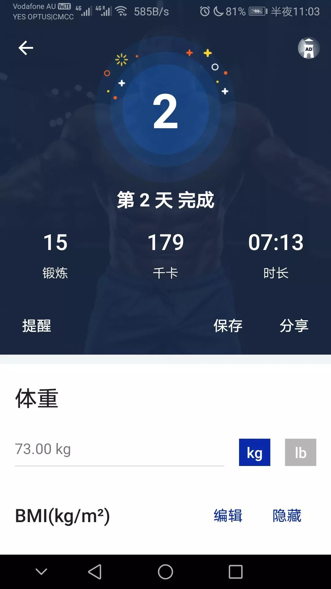
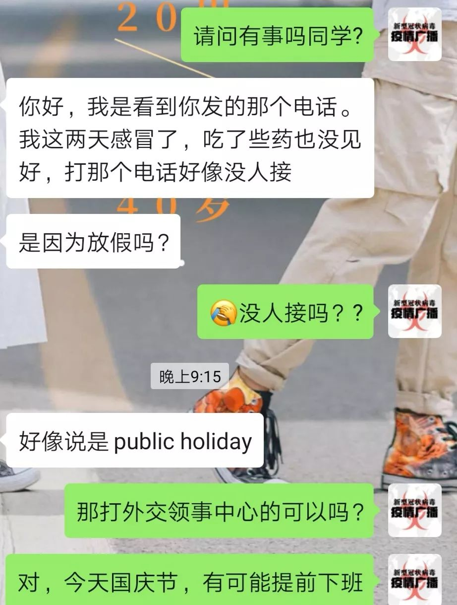

一个独居女性的武汉封城日记|1月23—26日
原文链接 备份链接 这是我的朋友郭晶的日记。 记录了封城期间在武汉独居的外来女性的真实生活体验和心理感受。 她第一次发在微博上的日记被转发近5000次，第二条就严重被限流。所以我想帮她编辑转载到微信。 有朋友建议郭晶在这段时间可以学习或者 …
抗击新型肺炎自救第二天:
132跳绳，07:13腹肌锻炼。图二是外网可以下载的家庭健身工具，内网如有朋友需要可联系。
抗击新型肺炎的第二天:
室友买了蔬菜，我买了很多梨，小室友又煮了梨汤，大家互相帮助，很暖。
有朋友口罩还没到货，临时挤出来了一半的口罩借给她，我现在也断货了，大家没事不要叫我出门，也不要找我借口罩了，北老师没有了…
出门给朋友送口罩，裹得严严实实地，不少老外回头率很高，但是路上撞上了特别多人也戴上了口罩，比起三天前我戴口罩出门如同奇葩一样，现在好很多了。
有朋友觉得自己可能发烧，通过MEB20周微信群联系了我，我尽力通过外交部、领事馆、领保中心和维州卫生部的信息去联系，最后朋友终于确认是普通感冒，松了一口气。
目前墨尔本和悉尼问题比较严重，澳洲政府已经采取行动，与灭火不同，在这一点上中央政府调度能力要相对强一些，并且莫纳什大学是医学全球前三的，有能力应对。不过目前Monash clayton medicine center已经封锁，飞机上估计也有很多人已经感染，希望不会出事。
内地的朋友们终于重视起来了，但是我们现在也在反思，我们行动晚了，官方完全公开信息比我们还晚了几步，这其实是不合适的。我们需要反复调整，在下次面对同类问题时优先启动官媒。
毕竟没有人相信朋友圈。不过，这话我说了也不算，只是希望老师们看到了我这句后能够更加强化自己要上报申请往后加速官媒的工作吧。
作为一名学生，我是失职的，学习量确实减少了很多。但今天还是努力背完了一本单词书，今晚继续刷听力的notetaking。
有在微博看到很多人骂记者，也有很多人骂武汉，还有的骂浙江。这其实是非常错误的做法。我们需要的是理智的恐慌，而不是无知的恐慌。目前大家都是”一条绳上的蚂蚱”，你我保护到了一个人，提高了一个人的意识，真的就是在救我们自己。
大家心里关于2019-nCov的知识增多了，自然也就不会那么恐慌了。只不过每一个人都需要紧张起来，因为一个疏忽，就可能感染。
很抱歉我们还是行动晚了，这是我们的失职。很多人不相信记者，是我们的错。
盼望大家能够行动起来，主动刷朋友圈，刷微博，刷ins和推特，刷什么呢？刷我们怎么努力去面对这场灾难——
水果蔬菜，锻炼身体，正常作息，陪伴老人孩子宠物，出门戴口罩，拒绝聚会，拒绝约会。
我看到很多共青团员在收到行动令后毫无作为，内心其实是比较悲伤的。我并没有入团，我只戴过红领巾。但是我戴过，我知道我的责任是什么。很多朋友写了申请书，做了宣誓，乃至已经是预备党员。
希望大家真的能够担当起来我们的责任。这是我们这一代年轻人与以往的不同。我们是最爱国，最自信，最有辨识能力又最相信中国共产党的一代。
祖国确实在这一次行动中暴露出了很多问题，但目前的行动力已经是人类历史上未曾有过的速度与规模。相信祖国，热爱她，保卫她，这生我们，养我们的土地。
带动你的身边人去健身，去正常饮食，提高免疫力，就是完成党和团，已经我们自己的历史任务。
天不佑中华，人自佑华夏。
2020.1.26 墨尔本





DW深度 北林
长按二维码向我转账
受苹果公司新规定影响，微信 iOS 版的赞赏功能被关闭，可通过二维码转账支持公众号。
原文链接 备份链接 这是我的朋友郭晶的日记。 记录了封城期间在武汉独居的外来女性的真实生活体验和心理感受。 她第一次发在微博上的日记被转发近5000次，第二条就严重被限流。所以我想帮她编辑转载到微信。 有朋友建议郭晶在这段时间可以学习或者 …
原文链接 备份链接 作者 | 薛芳 孙宏超 相欣 安然 马关夏 李越 编辑 | 康晓 出品｜深网·腾讯小满工作室 欢迎下载腾讯新闻APP，阅读更多优质资讯 平平安安就是年。 突袭而至的新病毒能阻止很多中国人在这个春节里团聚，但没有什么能阻 …
原文链接 备份链接 这几天都睡得特别晚，昨天凌晨两点多，突然在网上刷到武汉即将停掉市内所有公共交通，包括地铁，关闭机场和火车站等外出方式的时候，心里咯噔了一下，一来是这个措施说明疫情形势很严峻，二来是这辈子万万没想到会遇见一次“封城”。 …
原文链接 备份链接 车子从小区开出来，到了长江大堤下面的马路上。这条马路是武穴市区的主干道，大年初一，如若搁到往年，肯定是人挤人车堵车，现在却一路畅通无阻。马路一侧停着一排车子，零星的行人都带着口罩。 在车上翻看朋友转发来的视频，一个是隔 …
原文链接 备份链接 湖北潜江杨市刁庙村，门口的菜园 今天正月初一。从武汉回潜江的第五天。 潜江目前无感染。但最近的天门有3例确诊。 昨天上午，妹夫开车回了天门。他是上门女婿，家里只有一个老母亲。放心不下，年饭没吃就走了。早上，岳父电话他， …